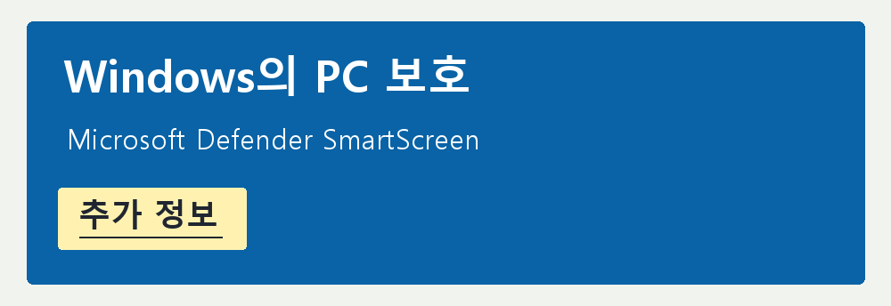

Windows 10·11 · 64비트
TEDDY 다운로드 및 설치 안내
설치 파일을 내려받은 뒤 아래 순서대로 진행해 주세요.
TEDDY 다운로드처음 설치하는 방법
내려받은 파일 찾기
파일을 저장할지 물으면 저장을 선택하세요. 브라우저 오른쪽 위의 다운로드 목록을 열거나 Ctrl + J를 누르면 진행 상황을 볼 수 있어요. 다운로드가 끝나면 파일 이름 옆의 폴더 아이콘을 눌러 저장 위치를 여세요.
다운로드 Ctrl + JTEDDY-Setup.exe다운로드 완료브라우저 화면 예시 · 폴더 아이콘을 누르면 파일이 저장된 위치가 열려요. 설치 파일 열기
저장한 폴더에서 TEDDY-Setup-1.0.1.exe를 두 번 클릭하세요. 저장 위치를 따로 고르지 않았다면 Windows 파일 탐색기의 다운로드 폴더에서 찾을 수 있어요. 파일 확장자가 숨겨진 PC에서는 이름 끝의 .exe가 생략돼요.
다운로드TEDDY-Setup.exe 응용 프로그램파일 탐색기 예시 · 실제로 내려받은 파일 이름에는 버전 번호가 포함될 수 있어요. Windows ‘PC 보호’ 화면 확인하기
처음 설치할 때 Windows가 “Windows의 PC 보호” 경고를 띄울 수 있어요. 이 홈페이지에서 받은 TEDDY 설치 파일인지 확인한 뒤 추가 정보 → 실행을 차례로 누르면 설치가 계속돼요. 이 화면이 뜨지 않으면 다음 단계로 넘어가세요.
학교에서 관리하는 PC에 ‘실행’ 버튼이 보이지 않으면 학교 전산 담당자에게 설치 가능 여부를 문의해 주세요.

① 처음 보이는 화면에서 ‘추가 정보’를 누르세요. Windows의 PC 보호앱 TEDDY-Setup.exe실행 실행 안 함② 앱 이름을 확인한 뒤 ‘실행’을 누르세요. Windows 버전에 따라 화면은 조금 다를 수 있어요. TEDDY 실행하고 첫 일정 열기
설치 파일이 필요한 파일을 자동으로 복사하고 TEDDY를 열어요. 창이 보이지 않으면 바탕 화면의 TEDDY 아이콘을 두 번 클릭하거나 Windows 시작 메뉴에서 TEDDY를 검색하세요.
처음 실행하면 화면 안내에 따라 업무 프로필을 만들고 예시 일정을 둘러보세요. 실제 쪽지를 가져오려면 Brity 메신저 PC 앱에 로그인한 뒤 TEDDY에서 지금 동기화를 누르세요.

실제 프로그램 화면 · 처음에는 예시 일정으로 달력을 둘러볼 수 있어요.